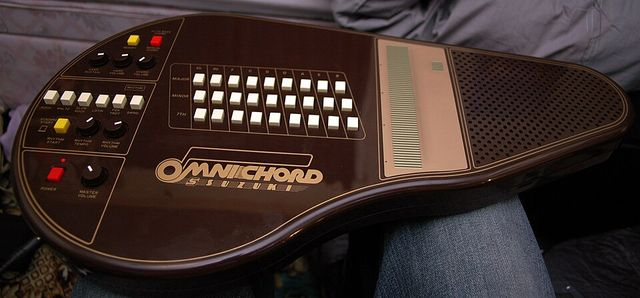

Scheda 062 · 1981 · Giappone
Suzuki Omnichord
Si suona con un dito e le note sono sempre intonate. Eno e Lanois ci hanno fatto «Deep Blue Day»
Un'autoarpa elettronica per chi non ha mai suonato.
Il suono vero · 0:16
Un Omnichord OM-36, modello successivo all'OM-27 del 1981: le Sonic Strings strisciate sulla piastra.
0:00 / 0:16
Registrazione di InDimension · CC BY-SA 4.0 · Wikimedia Commons · estratto di 16 s, volume normalizzato
- PRIMO MODELLO
- OM-27, 1981
- ACCORDI
- 27
- SUONI
- 1: arpa
- FINE
- 1996
La macchinaChe cos'è
Un corpo marrone lucido a forma di paletta. A sinistra i tasti per gli accordi, al centro una piastra a strisce da accarezzare con le dita, a destra l'altoparlante. Si sceglie l'accordo, si striscia il dito e le note escono arpeggiate. In più c'è un ritmo preimpostato e un basso automatico. L'OM-27 ha 27 accordi e un solo suono, l'arpa.
Chi l'ha costruitaSuzuki
La Suzuki è un'azienda giapponese di famiglia che faceva armoniche dal 1953. Nel 1981 presenta l'Omnichord insieme al Portachord, e lo pensa per chi non ha mai suonato e si spaventa davanti a una tastiera. Nessuna delle fonti che ho trovato dice chi l'ha disegnato, quindi non lo dico. Nel 1984 escono OM-36 e OM-84, con più accordi. L'ultimo, l'OM-300, esce intorno al 1996.
Come funzionaCosa c'è dentro
La piastra è elettronica, non ci sono corde: tocchi una striscia e senti una nota dell'accordo scelto, sempre intonata. Non puoi sbagliare nota, puoi sbagliare accordo. I primi modelli sono analogici, dicono le fonti, fino al 1989.
Chi l'ha usataNei dischi
- Eurythmicsil suono d'arpa in «Love Is a Stranger» (1982, ma una fonte dice 1983)
- Brian Eno e Daniel Lanois«Deep Blue Day» dall'album «Apollo» (1983)
- Daniel Lanoisanche su «Trip Through Your Wires» degli U2 (1987)
L'aneddotoUna storia
Dave Stewart, che ne prese uno in Giappone, lo descrive come un incrocio fra un giocattolo e uno strumento. Sulla data di «Love Is a Stranger» le fonti non si mettono d'accordo, 1982 per Wikipedia e 1983 per un'altra. Nel 1985 Tiny Tim ha scritto sulla copertina di un suo singolo che era il primo disco suonato tutto con l'Omnichord. A me piace che, per chi non sa suonare, la prima regola sia: non puoi sbagliare nota.
Avvertenze
L'OM-27 ha 27 accordi e un solo suono, l'arpa. Se la vostra versione ne ha 36 o 84, non è un OM-27.
Il reel
La versione corta
Le cose da sapere in fila, una schermata alla volta, col suono della macchina quando ne esiste una registrazione libera. Aprilo su Instagram ↗
Il carosello
Le 6 tavole
Da dove viene
Fonti
- «Omnichord» — Wikipedia (EN): Suzuki 1981, OM-27, modelli, Eurythmics, Eno e Lanois, Tiny Tim verificata il 2026-10-16
- «Suzuki Omnichord history» — Perfect Circuit: 1981, OM-27 con 27 accordi e un solo suono, Eurythmics, Lanois verificata il 2026-10-16
Foto: tico_24 · CC BY 2.0 · Wikimedia Commons
Foto nelle tavole: dana_dane · CC BY-SA 2.0 · Wikimedia Commons
Suono: Registrazione di InDimension · CC BY-SA 4.0 · Wikimedia Commons · estratto di 16 s, volume normalizzato